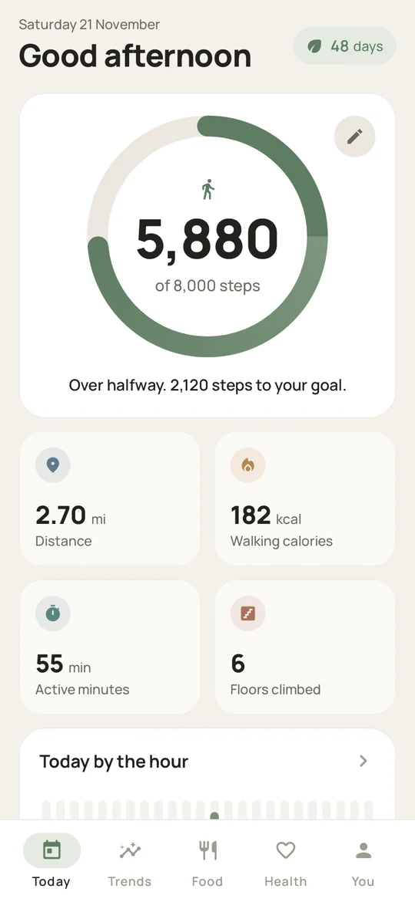
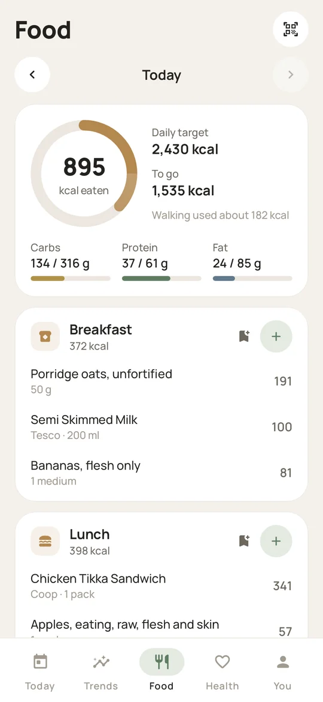
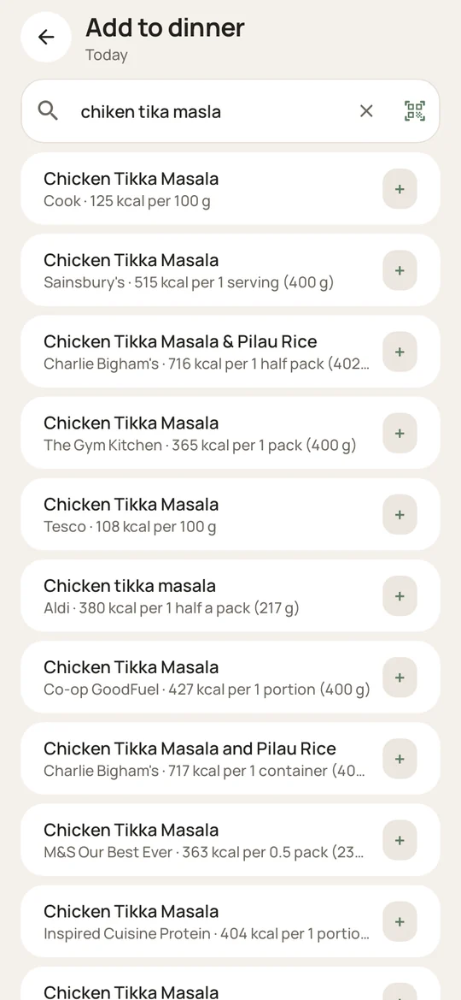
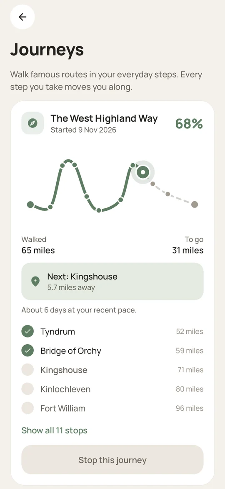
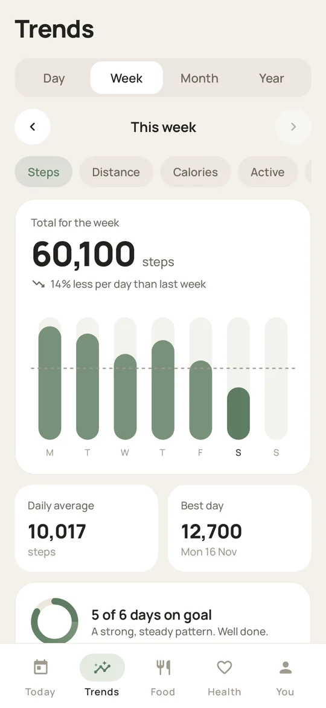
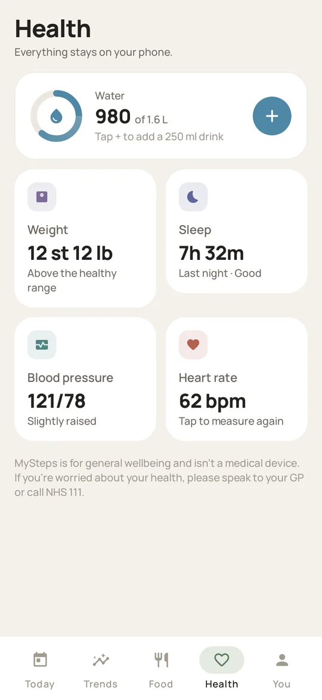
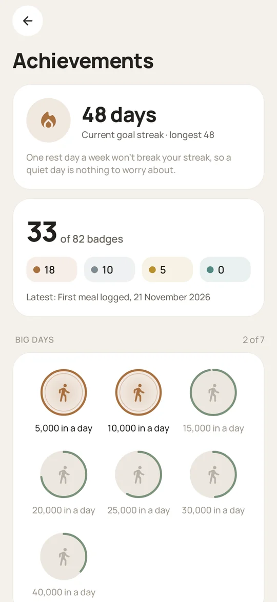
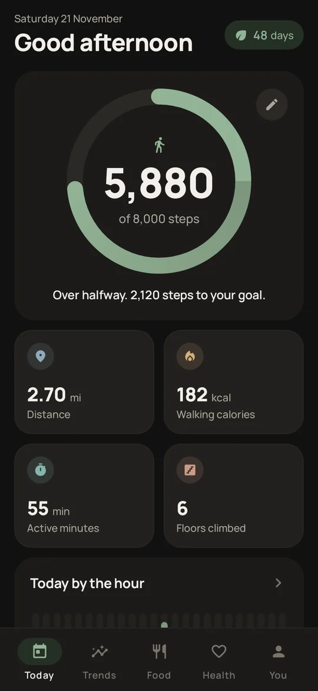
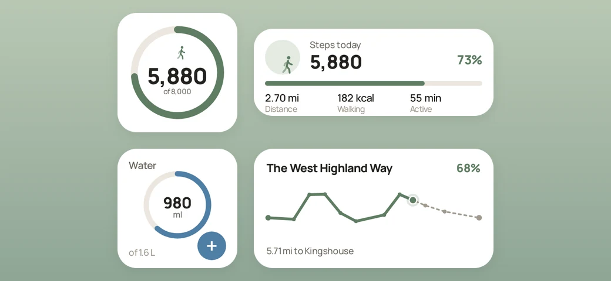

Every step, counted kindly.
MySteps is a step counter and health tracker for Android. It counts your steps all day, times your walks, and keeps your water, weight, sleep, blood pressure, heart rate and meals in one calm, tidy place.
It's free, with no adverts and nothing to unlock. There's no account, and your records stay on your phone.
Free, with nothing to unlock. Android 8 or later. No ads, no accounts. Compare · Release notes
Chrome may say the file might be harmful. It shows this for app files that don't come from Google Play. Choose Download anyway.
- Walk to work2,140 steps
- Lunchtime stroll2,380 steps
- Walk the dog2,050 steps
- Evening walk1,620 steps
How it works
Put your phone in your pocket and get on with your day. MySteps does the counting, and shows you how it's adding up.
Tell it a little about you
Your height, weight and a daily goal. It uses them for distance, calories and a sensible food target, and nothing else.
Just walk
Steps are counted in the background by your phone's step sensor. Start a timed walk from Today whenever you like.
Watch it add up
Streaks grow, badges arrive and your journey moves on. Trends shows the weeks, months and years.
What it looks like
Warm stone, graphite and a soft sage green, with clear type and plenty of room. There's a dark theme too.

TodayThe day's ring, your numbers, and the hour-by-hour chart. 
FoodMeals, a calorie ring and your macros against a safe daily target. 
Search that forgives typing“chiken tika masla” finds chicken tikka masala, from 147,689 foods. 
JourneysThe West Highland Way, 68% walked, with the next stop ahead. 
TrendsDay, week, month and year, with your daily average and best day. 
HealthWater, weight, sleep, blood pressure and heart rate in one place. 
AchievementsYour streak, with its weekly rest day, and 82 badges to earn. 
Dark themeThe same app in its dark look, for evenings.

Everything is in, and all of it is free
You can use MySteps as a simple step counter and never open a menu. The rest is there for when you want it.
- Counts every step, quietly
- Uses your phone's own step sensor, which is accurate and gentle on the battery. Phones without one count from motion instead. Counting carries on after a restart.
- A clear Today page
- A ring for the day's goal, distance, walking calories, active minutes and floors climbed, an hour-by-hour chart and the week at a glance.
- Walks, with or without a route
- Time a walk with pause and resume. Switch on GPS and your route is drawn as a clean outline, with no map service involved.
- Trends and records
- Day, week, month and year, for steps, distance, calories, active minutes and floors, with your best day, best week and longest streak.
- Streaks that are fair
- One rest day a week doesn't break a streak, and an unfinished today never does. Your longest run is always kept.
- 82 badges, four tiers
- Big days, streaks, goal days, lifetime steps and distance, walks, climbing, healthy habits and journeys, from bronze to platinum, with a celebration for each.
- Fifteen journeys
- Walk Hadrian's Wall, the West Highland Way, the Camino, Route 66 or right round the world, a day's steps at a time, passing real stops on the way.
- A food diary that forgives typing
- 147,689 foods: everyday UK foods from the government's food tables and UK branded products from Open Food Facts. It finds “chiken tika masla”, and works with no signal.
- Barcode scanning on the phone
- Point the camera at a barcode and the product comes up. Barcodes are read on your phone; nothing is looked up online.
- A sensible calorie target
- Worked out from your details, your real step average and your weight goal, and never set below a safe level. You can set your own, within that safe level.
- Water, weight and sleep
- Cups you choose, a weight trend line with safe goals, and a sleep log that shows how your sleep and your steps affect each other.
- Blood pressure and heart rate
- Readings sorted by the NHS ranges, or the European or American ones if you prefer. Heart rate from your fingertip over the camera, or typed in.
- Reminders with quiet hours
- Nine kinds of gentle nudge, from an evening step check to a weekly weigh-in. All off at night, and every one optional.
- Eight widgets
- A steps ring, today's numbers, the week, water with an add button, food, your journey, your streak, and a dashboard of the lot.
- A monthly report
- A tidy two-page PDF of your month's steps, walks, weight, blood pressure, heart rate, sleep, water and food. Handy to keep, or to show your GP.
- Backup you control
- Save everything to one file, restore it with an Undo, or pick a folder for a copy each night. The newest seven are kept.
- Health Connect, if you want it
- Bring in steps from your watch, counted fairly hour by hour so nothing is doubled, and share your records with your other health apps.
- Kind wording, calm colours
- Warm stone and sage, a proper dark theme, miles or kilometres, stones, pounds or kilograms. Every message is written to encourage, never to scold.
Streaks that allow for real life
Most step counters reset a streak to nought the first quiet day you have, which is just when encouragement matters most. MySteps counts a streak the way a reasonable person would.
Rest dayOne missed day in each week is a rest day. It doesn't add to the streak, but it doesn't break it either.TodayAn unfinished today never breaks a streak. It only counts once you reach the goal.Best runYour longest streak is always kept, whatever happens to the current one.
A food diary that works on the bus
The whole food list lives inside the app, so searching and scanning work with no signal and nothing you eat is looked up online.
- Everyday UK foods
- 2,853 foods from McCance and Widdowson's composition of foods, the UK government's reference tables, with sensible portions like a slice of bread or a medium banana.
- UK branded products
- 144,836 products from Open Food Facts, each with a barcode and full nutrition, checked so the numbers add up.
- Search that forgives typing
- Results narrow as you type. Spelling slips are put right, British and American names both work, and the foods you add most come first.
- Your own foods and meals
- Add a food from its label, with its barcode if it has one. Save a meal you often have, or build a recipe and split it into servings.
- A safe target
- Worked out with the Mifflin–St Jeor equation, your real step average and your weight goal. It never goes below a safe minimum, even if you set your own.
- More than calories
- Carbohydrate, protein and fat, plus sugars, saturated fat, salt and fibre against the UK reference intakes, scaled to your target.
Fifteen journeys to walk
Choose a route and your everyday steps carry you along it. Each one has real stops on the way, a drawing of the route, and an estimate of when you'll arrive at your recent pace.
- Around the UK
- London to Brighton, Hadrian's Wall Path, the West Highland Way, Offa's Dyke Path, the Thames Path, the Coast to Coast, the Pennine Way, and Land's End to John o' Groats.
- Around the world
- The Inca Trail, the Tour du Mont Blanc, London to Paris, the Camino de Santiago, Iceland's Ring Road, Route 66, and right round the world.
What it asks of your phone
Each permission has one job. Android asks you about the important ones, and you can say no to any of the optional ones.
| Access | What MySteps does with it | What it never does |
|---|---|---|
| Physical activity | Reads your phone's step sensor to count steps. | Anything else with your movement. |
| Notifications | Shows the quiet step-counting notice, and the reminders you choose. | Send offers, tips or anything you didn't ask for. |
| Location | Draws your route during a walk you start, if you switch route recording on. | Track where you are at any other time, or send your location anywhere. |
| Camera | Reads a barcode, or your heart rate from your fingertip, while that screen is open. | Take, keep or send any picture. |
| Health Connect | If you switch it on: reads steps from your watch, and shares your records with your other health apps. | Read anything you haven't allowed. |
| Internet | Asks GitHub once a day whether a newer version is out. You can switch it off. | Send your steps, your health records or anything about you anywhere. |
| A file or folder you pick | Saves a backup or a report where you say, and the nightly backup in the folder you chose. | Look at anything else in your storage. |
The detail is in the privacy policy.
Your health is your business
Nothing is collected
Your steps, walks, meals and health records are kept on your phone. The developer runs no servers and receives nothing.
Online only for updates
The one thing MySteps does online is ask GitHub whether there's a newer version, and you can switch that off. This site has no cookies and no tracking.
No accounts, no adverts
There's nothing to sign up for, nothing to pay for and no advertising in the app.
Questions
Is MySteps really free?
Yes. There's no paid version, no subscription, no trial and no adverts, and nothing in the app is locked.
Is MySteps on Google Play?
No. MySteps is a personal project and is downloaded from this site as an Android app file. It needs Android 8 or later, which covers almost every phone in use.
Does it use the internet?
Only to check GitHub once a day for a newer version, so it can tell you one is ready, and you can switch that off. Step counting, the food list, barcode scanning, everything else works with no signal at all.
Where are my records kept?
On your phone, in the app's private storage. They also go into any backup file you save, the backup folder if you choose one, and Health Connect if you switch sharing on.
Will it drain my battery?
No. MySteps uses the phone's dedicated step sensor, which is built for exactly this and uses very little power. GPS is only used during a walk you start, and only if you ask for a route.
Why does it show a notification all the time?
Android requires an app that counts steps in the background to show one. It's set to the quietest level and shows your steps and progress.
How accurate is the food list?
Everyday foods come from McCance and Widdowson's tables, the UK government's reference. Product details come from Open Food Facts, which is built by volunteers, so please check the pack if something looks wrong. You can always add your own food from the label.
Is MySteps medical advice?
No. It's a wellbeing app for keeping a record. Blood pressure ranges, calorie targets and the rest are general guidance. If anything worries you, please speak to your GP or pharmacist, or call NHS 111.
How do I move to a new phone?
Open You, then Backup and sync, and choose Save a backup. Install MySteps on the new phone and choose Restore a backup. Everything comes across, and there's an Undo if you change your mind.
Can it use my watch's steps?
Yes, through Health Connect. Switch on Add steps from my watch. For each hour MySteps counts whichever is larger, the phone's steps or the watch's, so nothing is counted twice.
How do I update MySteps?
When a new version is out, a banner on Today says so, with a download link. Install it over the one you have and your records are kept.
Download MySteps
Download the app file on your Android phone and open it to install. Chrome may say the file might be harmful. It shows this for app files that don't come from Google Play. Choose Download anyway.
The first time, Android asks you to allow your browser to install apps. Google Play Protect may also step in, because MySteps is an app it hasn't seen before: choose More details, then Install anyway. To update, install the newest version over the one you have: your records and settings are kept. What changed in each version is in the release notes.
MySteps is for general wellbeing and keeping a record. It isn't a medical device and it isn't medical advice. If you have a health condition, are pregnant, or are changing how much you exercise or eat, please check with your GP or pharmacist first. The detail is in the terms of use.
The same developer makes other free Android apps. For a question, a problem, or anything about your data, open an issue on GitHub.